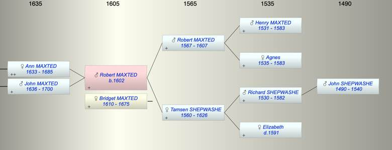

| [Index] |
| Robert MAXTED (1602 - ) |
|  |
| b. 1602 |
| +. Bridget MAXTED (1610 - 1675) |
| Parents: |
| Robert MAXTED (1567 - 1607) |
| Tamsen SHEPWASHE (1560 - 1626) |
| Siblings (5): |
| Elizabeth MAXTED (1587 - ) |
| Mary MAXTED (1589 - ) |
| Thomazine MAXTED (1592 - ) |
| Edward MAXTED (1595 - ) |
| Thomas MAXTED (1599 - ) |
| Children (2): |
| Ann MAXTED (1633 - 1685) |
| John MAXTED (1636 - 1700) |
| Events in Robert MAXTED (1602 - )'s life | |||||
| Date | Age | Event | Place | Notes | Src |
| 1602 | Robert MAXTED was born | ||||
| 1607 | 5 | Death of father Robert MAXTED (aged 40) | St Laurence | ex date of his Will | |
| 1626 | 24 | Death of mother Tamsen SHEPWASHE (aged 66) | |||
| 1633 | 31 | Birth of daughter Ann MAXTED | St Laurence | Note 1 | |
| 1636 | 34 | Birth of son John MAXTED | St Lawrence | Note 2 | |
| 1675 | 73 | Death of wife Bridget MAXTED (aged 65) | St Laurence | ||
| 1685 | 83 | Death of daughter Ann MAXTED (aged 52) | St Laurence | Note 3 | |
| 1700 | 98 | Death of son John MAXTED (aged 64) | Note 4 | ||
| Robert MAXTED died (no date) | Note 5 | ||||
| Personal Notes: |
|
Robert was either:
bap St L 13 Feb 1602/3 son of Robert bap St L 30 Jan 1602/3 son of Edmond They are very close but discrete entries in the St Laurence PR. Robert and Edmond may have been brothers and it appears both came from Chilham and moved to Thanet around 1600. Below we will see if we can decide which was Ann’s line. Robert son of Robert was youngest of seven children. His parents, Robert Maxted and Tamsen Shepwashe, were married at Chilham Nov 7 1585 ex FS. FMP has the year as 1586. Robert Maxted was sidesman 1592 at (Chilham?). |
| Created on a Mac™ using iFamily for Mac™ on 8 Oct 2023 |